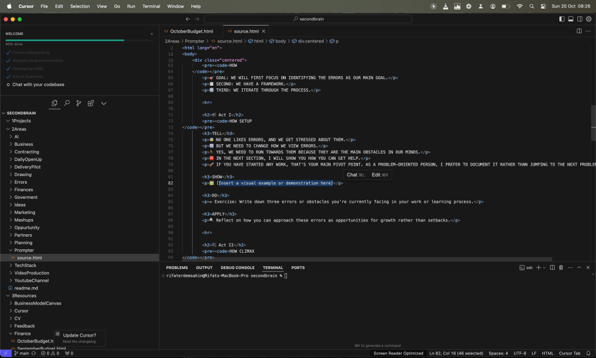

Problem-Oriented vs. Solution-Oriented: How Different Mindsets Shape the Use of AI Tools 🤔💡

🤔💡
In today's fast-evolving tech landscape, the way you approach problem-solving can define how you utilize tools like GPT and prompter setups. There’s a key distinction between problem-oriented and solution-oriented mindsets, and each comes with its own strategy for leveraging AI in development.
💭 Problem-Oriented Mindset: Creating a Blueprint with HTML & GPT
When you’re problem-oriented, your primary goal is understanding the root of an issue. You thrive in breaking it down, building structures to analyze it, and searching for comprehensive insights. In this mindset, an HTML page built using GPT becomes your playground.
Here's Why:
-
Detailed Analysis 🧐: The HTML page is a canvas to break the problem into components. With GPT’s help, you can generate sections that dissect each part of the problem, adding layers of information and analysis.
-
Dynamic Layouts 💻: HTML allows you to organize and visualize complex data and possible solutions, giving you more clarity and depth as you seek to solve the problem.
-
Iterative Process 🔄: As you explore new findings, your HTML page evolves. You may return to tweak, restructure, or even shift your focus as new insights emerge.
📝 Example: Imagine building a website that not only outlines possible solutions but tracks the evolution of your understanding of the problem. As GPT assists in generating new ideas, your page grows, and so does your problem-solving approach.
🎯 Solution-Oriented Mindset: A Single Prompter Setup for Delivery
On the flip side, when you’re solution-oriented, you're focused on results and efficiency. You see the end goal and take action with the simplest tools available to get there. A single prompter setup is all you need.
Here's Why:
-
Efficiency 🚀: Instead of designing a detailed layout like an HTML page, you focus on generating one key prompt that drives GPT to provide actionable solutions, cutting through the clutter.
-
Laser Focus on Execution 🎯: You’re not looking to analyze every corner of the problem. Instead, you're focused on the solution, using GPT to guide you in the quickest way possible towards delivering results.
-
Streamlined Workflow 🔧: A single prompter setup means fewer distractions and more momentum in achieving your objectives. You optimize your workflow, ensuring each prompt is fine-tuned for immediate action.
📝 Example: Using GPT with a single, targeted prompt that outlines the task at hand, you deliver a solution faster, without needing to explore every avenue of the problem.
🎥 A Quick Pause for Reflection
Screenshots of workflows for both approaches:
1. Problem-Oriented Approach:
(Include a screenshot of a complex HTML page with GPT sections analyzing different parts of a problem.)
2. Solution-Oriented Approach:
(Include a screenshot of a single GPT prompter setup with a clear and actionable solution.)
⚖️ Which Approach is Better?
Both approaches have their strengths. A problem-oriented mindset suits those who like to explore complexities, while a solution-oriented approach is perfect for fast-paced execution. The key is knowing when to adopt each mindset and tailoring your AI setup to meet your specific needs.
🔗 Connect with me:
-
💼 LinkedIn: https://www.linkedin.com/in/rifaterdemsahin/
-
🐦 Twitter: https://x.com/rifaterdemsahin
-
🎥 YouTube: https://www.youtube.com/@RifatErdemSahin
-
💻 GitHub: https://github.com/rifaterdemsahin
What's your preferred approach? Drop your thoughts in the comments! ✨
Imported from rifaterdemsahin.com · 2025